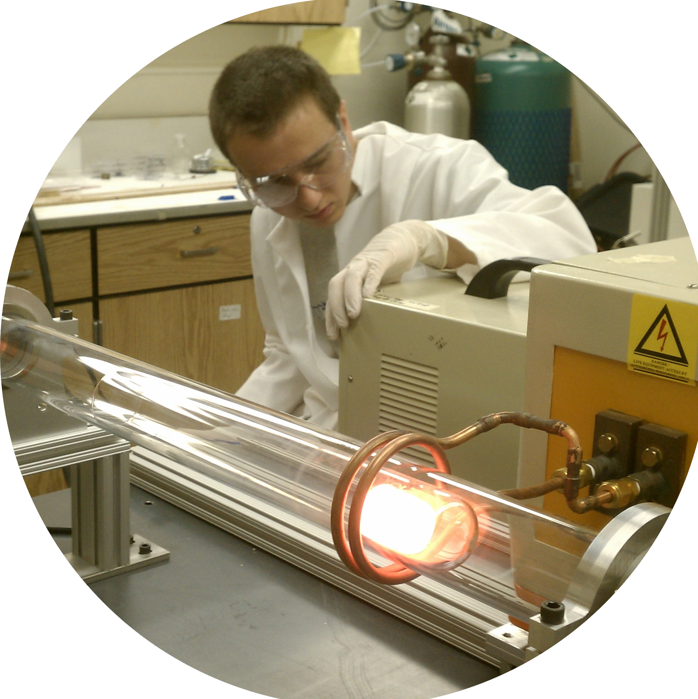

Research
Contents :
• Resume and Curriculum Vitae
• Research Experience
• Publications
• Proceedings and Presentations
• Awards
• Leadership, Mentoring, and Outreach
• Media Coverage
Resume and
Curriculum Vitae
Below are links to my resume and CV:
Resume
CV
Research Experience
Remote Sensing Research
January 2021 - Present
APEX, Advanced Programs and Exploitations
Lockheed Martin Space Systems
- Signal processing, algorithm development, object detection and tracking
- Synthetic radiometric scene generation
- Super resolution, image-to-image translation, and style transfer with Generative Adversarial Networks (GANs), image segmentation with UNETs and FCNs, object classification with Convolution Neural Networks (CNNs).
- Selected as a Recognized Technical Talent for technical contributions within first year.
- Generated intellectual property which was awarded and protected as a trade secret.


Cosmic Ray Research
2014 - 2020
Telescope Array Cosmic Ray Observatory
University of Utah, Department of Physics and Astronomy, Institute of High Energy Astrophysics
Research Advisor: Douglas Bergman
Thesis: Observation of the GZK Suppression with the Telescope Array Fluorescence Telescope and Deployment of the Telescope Array Expansion
Thesis Defense Slides: pptx pdf
- Analyzed 10 years of UV fluorescence event data to calculate a cosmic ray energy spectrum. Raw cosmic ray event data were analyzed by reconstructing event geometry and energy. The event information was aggregated into a large database to produce the event energy distribution. The aperture of the optical detectors was calculated through simulating cosmic events in the atmosphere and simulating the response of the detectors.
- Analyzed the significance of the Greisen–Zatsepin–Kuzmin (GZK) Suppression at the highest energies of cosmic rays in the 10 year cosmic ray spectrum. Analyzed other features that give insight into cosmic ray populations or propagation effects.
- Analyzed the preliminary data from the new fluorescence detectors for the expansion of TA known as TAx4 into a preliminary Cosmic Ray Energy Spectrum and compared to previous results to gauge the new detector’s abilities.
- Classified weather over TA with the fluorescence detector photomultiplier tube baselines to create false color images of the detectors’ field of view. Videos of these snapshots were then used as inputs in a Recurrent Convolu on Neural Network (RCNN) model constructed with Keras machine learning framework to determine clear weather data for further cosmic ray analysis.
- Created composite satellite maps in Python with site geographic information overlays of TA using data from the Landsat 8 satellite pulled from Amazon Web Services. Created topographical and shaded relief maps in Python with site geographic information overlays using Shuttle Radar Topography Mission data (SRTM).
- Built, tested, and deployed the new fluorescence detectors in TAx4.
- Field team leader charged with the safety of field crew and overseeing the deployment of the new surface detectors to their field site for TAx4.
- Maintained and operated surface and fluorescence detectors for cosmic ray event data collection.
- Analyzed fluorescence detector’s sensitivity to energy and development of cosmic ray event interactions in the atmosphere through Monte Carlo simula on. The reconstructed event information were analyzed by being binned into histograms and fitted using ROOT data analysis framework.
- Linux systems administrator of the Telescope Array’s data server and computational clusters at the University of Utah for 2 years.

Nano Fabrication Research
2011 - 2012
Michigan Technological University, Department of Physics
Research Advisor: Yoke Khin Yap
- Analysed growth parameters for Boron Nitride Nanotubes and Vertically Aligned Multi-Walled Carbon Nanotubes in a Chemical Vapor Deposition method.
- Adapted Chemical Vapor Deposition synthesis method to a scanning thermal source for greater growth yield.
Publications
SubPixel Localization of Objects Using Multiple Spectral Bands, M. Gupta, J. Chan, M. Krouss, G. Furlich, P. Martens, M. Chan, M. L. Comer, E. J. Delp, IEEE Aerospace Conference (2022), accepted
Constraints on the diffuse photon flux with energies above 1018 eV using the surface detector of the Telescope Array experiment, R.U. Abbasi et al. (Telescope Array Collaboration), Astropart. Phys. 110 (2019)
Testing a Reported Correlation between Arrival Directions of Ultra-high-energy Cosmic Rays and a Flux Pattern from nearby Starburst Galaxies using Telescope Array Data, R.U. Abbasi et al. (Telescope Array Collaboration), ApJ. 867 2 (2018)
The Cosmic-Ray Energy Spectrum between 2 PeV and 2 EeV Observed with the TALE detector in monocular mode, R.U. Abbasi et al. (Telescope Array Collaboration), ApJ. 865 74 (2018)
Evidence of Intermediate-scale Energy Spectrum Anisotropy of Cosmic Rays E ≥ 1019.2 eV with the Telescope Array Surface Detector, R.U. Abbasi et al. (Telescope Array Collaboration), ApJ. 862 91 (2018)
Depth of Ultra High Energy Cosmic Ray Induced Air Shower Maxima Measured by the Telescope Array Black Rock and Long Ridge FADC Fluorescence Detectors and Surface Array in Hybrid Mode, R.U. Abbasi et al. (Telescope Array Collaboration), ApJ. 858 76 (2018)
Gamma-ray Showers Observed at Ground Level in Coincidence With Downward Lightning Leaders, R.U. Abbasi et al. (Telescope Array Collaboration), Journal of Geophysical Research: Atmospheres 123 (2018)
Increasing the Yield of Boron Nitride Nanotubes in a CVD Method, Greg Furlich, Michigan Space Grant Consortium, Michigan in Space 14 (2012)
Proceedings and Presentations
Recent measurement of the Telescope Array energy spectrum and observation of the shoulder feature in the Northern Hemisphere, D. Ivanov, D. Bergman, G. Furlich, R. Gonzalez, G. Thomson and Y. Tsunesada, Proceedings of Science 395 (ICRC2021), 341, 37th International Cosmic Ray Conference, Berlin, Germany, July 2021
Telescope Array 10-Year Monocular Spectrum , Douglas Bergman, Greg Furlich, Proceedings of Science 395 (ICRC2021), 339, 37th International Cosmic Ray Conference, Berlin, Germany, July 2021
Telescope Array FD Weather Classification using Machine Learning, Greg Furlich, Proceedings of Science 358 ICRC2019), 261, 36th International Cosmic Ray Conference, Madison, WI, July 2019
Towards a Telescope Array 10 Year FD Monocular Energy Spectrum, Greg Furlich, Douglas Bergman, Proceedings of Science 358 (ICRC2019), 260, 36th International Cosmic Ray Conference, Madison, WI, July 2019
Weather Classification using Machine Learning at the Telescope Array Cosmic Ray Observatory, APS April Meeting, Denver, CO, April 2019
Weather Classification using Machine Learning at the Telescope Array Cosmic Ray Observatory (Poster), Department of Physics and Astronomy Annual Symposium, University of Utah, Salt Lake City, UT, April 2019
Machine Learning Weather Classification with Fluorescence Detector Pedestal Data at the Telescope Array Cosmic Ray Observatory, APS Four Corners Meeting, University of Utah, Salt Lake City, UT, Oct. 2018
Machine Learning Weather Classification with Fluorescence Detector Pedestal Data at the Telescope Array Cosmic Ray Observatory, Graduate Research Seminar, University of Utah, Salt Lake City, UT, Oct. 2018
Dark Nights and Desert Air: Understanding the Highest Energy Particles in the Universe, Great Basin Astronomy Festival, Great Basin National Park, NV, Sept. 2018
TAx4 Fluorescence Detection (Poster), Physics and Astronomy Symposium, University of Utah, Salt Lake City, UT, April 2017
Hosting Your Own Website from Home with a Raspberry Pi, Graduate Research Seminar, University of Utah, Salt Lake City, UT, Oct. 2017
Once More Unto the Breach: Advice from a Physics graduate Student, Physics Seminar, Weber State University, Ogden, UT, Feb. 2017
Peer Mentoring: Training and Supporting Physics TAs at the University of Utah (Poster), AAPT Idaho-Utah Section Meeting, Pocatello, ID, April 2016
Preliminary Search for Exotic Events in the Pierre Auger Cosmic Ray Observatory Data, Physics Senior Research Oral Presentations, Michigan Technological University, Houghton, MI, April 2014
Awards
Recognized Technical Talent, Lockheed MartinSelected 2021
Departmental Scholar, Department of Physics, Michigan Technological University2013
Sigma Pi Sigma, Physics Honor SocietyInducted 2013
Michigan Space Grant Consortium Recipient2012
Leadership, Mentoring, and Outreach

I was invited to give a public talk about the Telescope Array Cosmic Ray Observatory and my research during the 2018 Great Basin Astronomy Festival (pictured above). 120 people attended!
(Image Credit: Kiley Spirito)
Research Mentor, Lockheed Martin
Sub-pixel localization and multispectral signal processing,
Purdue University PhD Candidate2021 - Present
Machine learning cloud segmentation in satellite imagery,
United States Military Academy West Point Cadet2021 - Present
Academic Senate, University of Utah
Member, Graduate Assembly Ad Hoc Committee2019
College of Science, University of Utah
Member, College of Science Council2017 - 2018
Member, College of Science Curriculum Committee2017 - 2018
Member, College of Science College Student Council2017 - 2018
Department of Physics and Astronomy, University of Utah
Chair, Graduate Student Advisory Council2017 - 2018
Member, Graduate Student Advisory Council2015 - 2019
Science Outreach
Volunteer, Physics Open House, Weber State University2017, 2018, 2019
Volunteer, Science Open House, University of Utah 2017, 2019
Volunteer and Speaker, Great Basin Astronomy Festival, Great Basin NP2018
Society of Physics Students, Michigan Technological University Chapter
Treasurer2012 - 2013
Keeping the Student Voice: Student Involvement in the Tenure Process, Katelyn Collett, The Daily Utah Chronicle, May 22, 2019
Pictured in Telescope Array TAx4 expansion work: Installation of surface particle detector begins in extreme cold (translated from Japanese), Makio Nakamura, ICRR News, 104, Winter and Spring 2019
PhD candidate sheds light on work of Millard County cosmic-ray observatory that’s largest in Northern Hemisphere, Rhett Wilkinson, Millard County Chronicle Progress, Sept. 19, 2018
▲
Back to Top